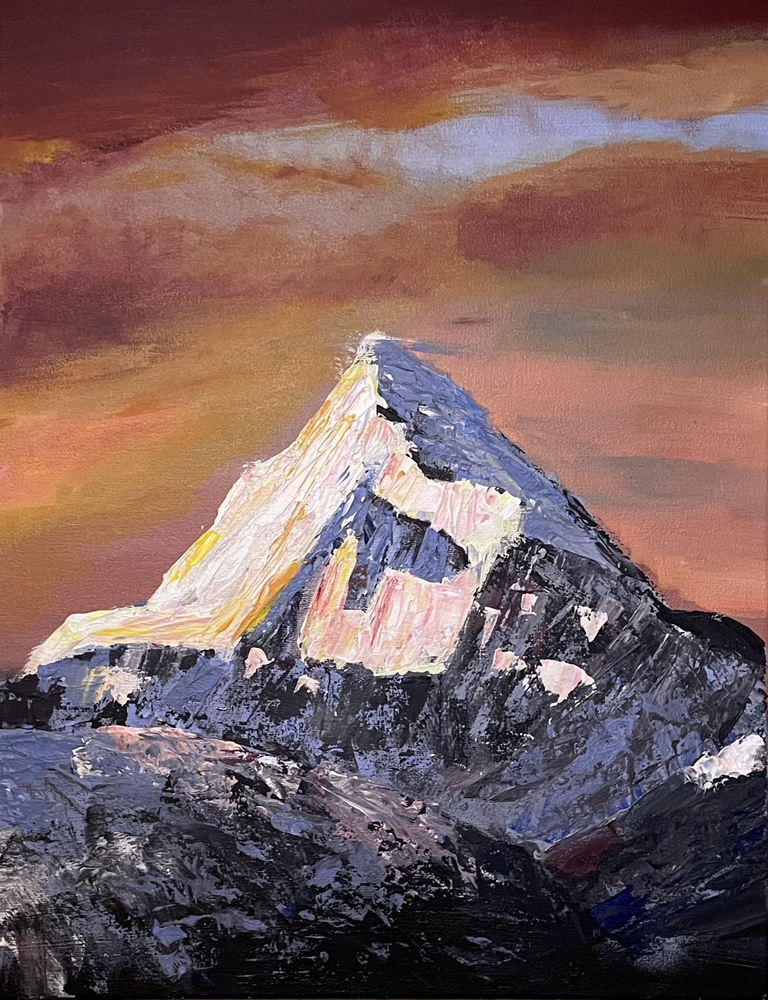

Góra Mount Everest
Oficjalna wysokość Everestu, wynosząca 8848 m n.p.m. jest trochę mniejsza od tej, na której latają pasażerskie odrzutowce. Ale każdego roku góra rośnie około pół centymetra. Obecnie jest o około 41 cm wyższa niż wtedy, kiedy zdobywali ją Edmund Hillary i Tenzing Norgay - w 1953 roku.
Siararara
Mount Everest, najwyższy szczyt na Ziemi, jest ikoną dla wszystkich miłośników górskich wyzwań i zdobywców przygód. Oto kilka kluczowych informacji o tej imponującej górze: Wysokość: Everest osiąga imponującą wysokość 8,848 metrów nad poziomem morza (29,029 stóp). Jest to najwyższy punkt na Ziemi. Położenie: Góra Everest znajduje się w łańcuchu Himalajów, na granicy między Nepalem a Tybetem w Azji. Nazwa: Pierwotnie, góra była znana jako Chomolungma w języku tybetańskim, co oznacza "Matka Świata". Natomiast w języku nepalskim nazywa się ją Sagarmatha, co oznacza "Czoło Świata". Obecnie jest znana na całym świecie jako Mount Everest, nazwana na cześć brytyjskiego geologa Sir George'a Everesta. Zdobycie: Pierwszego oficjalnego zdobycia szczytu dokonali Sir Edmund Hillary z Nowej Zelandii i Tenzing Norgay, szeregowiec z Nepalu, 29 maja 1953 roku. Ich osiągnięcie zostało uznane za jedno z największych w historii alpinizmu. Wzrost: Pomimo swojej monumentalnej wysokości, Everest wciąż rośnie. Co roku, w wyniku nacisku tektonicznego, szczyt góry podnosi się o około 4 milimetry. Wyzywające warunki: Zdobycie szczytu Everestu jest ekstremalnym wyzwaniem fizycznym i psychicznym. Ekstremalne warunki pogodowe, zmniejszone ciśnienie powietrza, niskie temperatury i brak tlenu stwarzają ogromne ryzyko dla zdobywców. Popularność: Pomimo ekstremalnych warunków, tłumy alpinistów z całego świata wciąż próbują zdobyć ten szczyt, co prowadzi do kwestii komercjalizacji i przeludnienia na trasie do szczytu. Mount Everest jest więc nie tylko najwyższym punktem na Ziemi, ale także symbolem wytrwałości, determinacji i ludzkiej pasji do zdobywania granic. Jednakże, z uwagi na coraz większą liczbę turystów, stawia on również przed nami wyzwania związane z zrównoważonym zarządzaniem turystyką górską i ochroną środowiska naturalnego. 
Ciekawostki o mount everest:
Najwyższy punkt na Ziemi: Jak już wspomniano, Mount Everest jest najwyższym szczytem na Ziemi, osiągając 8,848 metrów nad poziomem morza. Nazwy szczytu: W Nepalu góra jest nazywana Sagarmatha, co oznacza "Czoło Świata", natomiast w Tybecie jest znana jako Chomolungma, co w języku tybetańskim oznacza "Matka Świata". Pierwsze zdobycie szczytu: Sir Edmund Hillary z Nowej Zelandii i Tenzing Norgay, szeregowiec z Nepalu, dokonali pierwszego oficjalnego zdobycia szczytu Mount Everest 29 maja 1953 roku. Ciała na szczycie: Na szczycie Mount Everest znajdują się ciała zmarłych alpinistów, którzy nie zdołali zstąpić z powrotem. Ze względu na ekstremalne warunki, nie jest możliwe ich usunięcie, przez co stanowią one makabryczny element szlaku wspinaczkowego. Najstarszy zdobywca: W 2008 roku Min Bahadur Sherchan, 76-letni Nepalczyk, stał się najstarszym człowiekiem, który zdobył szczyt Everestu. Jego rekord został później pobity, ale pokazuje to, że ludzka determinacja może pokonać wiek. Najmłodszy zdobywca: Jordan Romero, 13-letni amerykański alpinista, stał się najmłodszą osobą, która zdobyła szczyt Mount Everest. Osiągnął ten wyczyn w maju 2010 roku. Zanieczyszczenie śmieci: Wraz z rosnącą liczbą turystów na Mount Everest, rośnie także problem zanieczyszczenia. Na szczytach i stokach góry można znaleźć duże ilości pozostawionych śmieci, co stwarza zagrożenie dla środowiska naturalnego. Pierwsza kobieta na szczycie: Japońska alpinistka Junko Tabei była pierwszą kobietą, która zdobyła szczyt Mount Everest w 1975 roku.